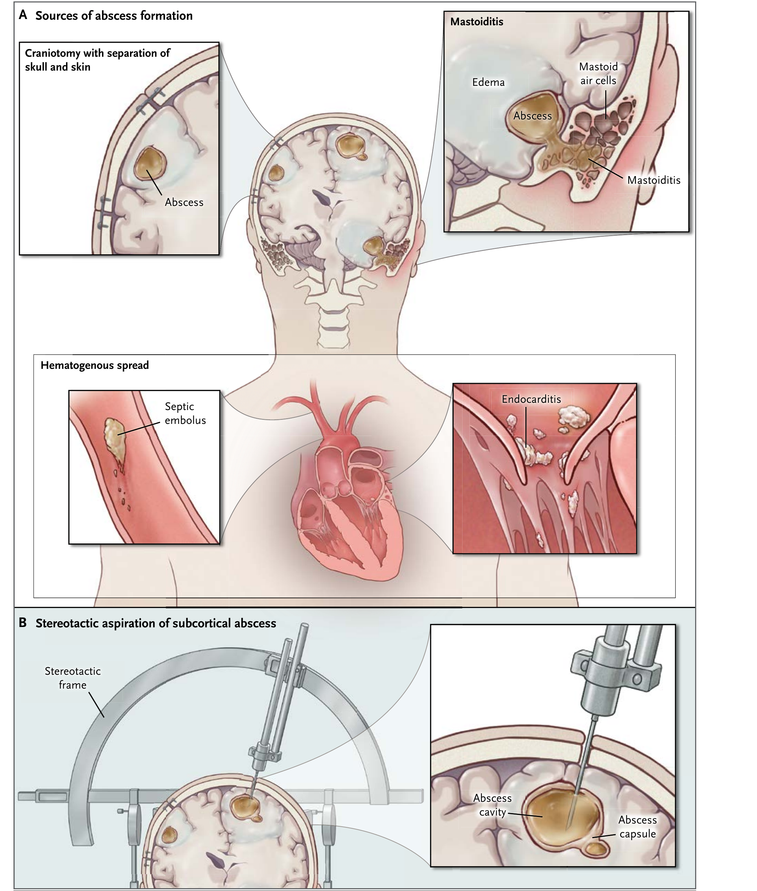
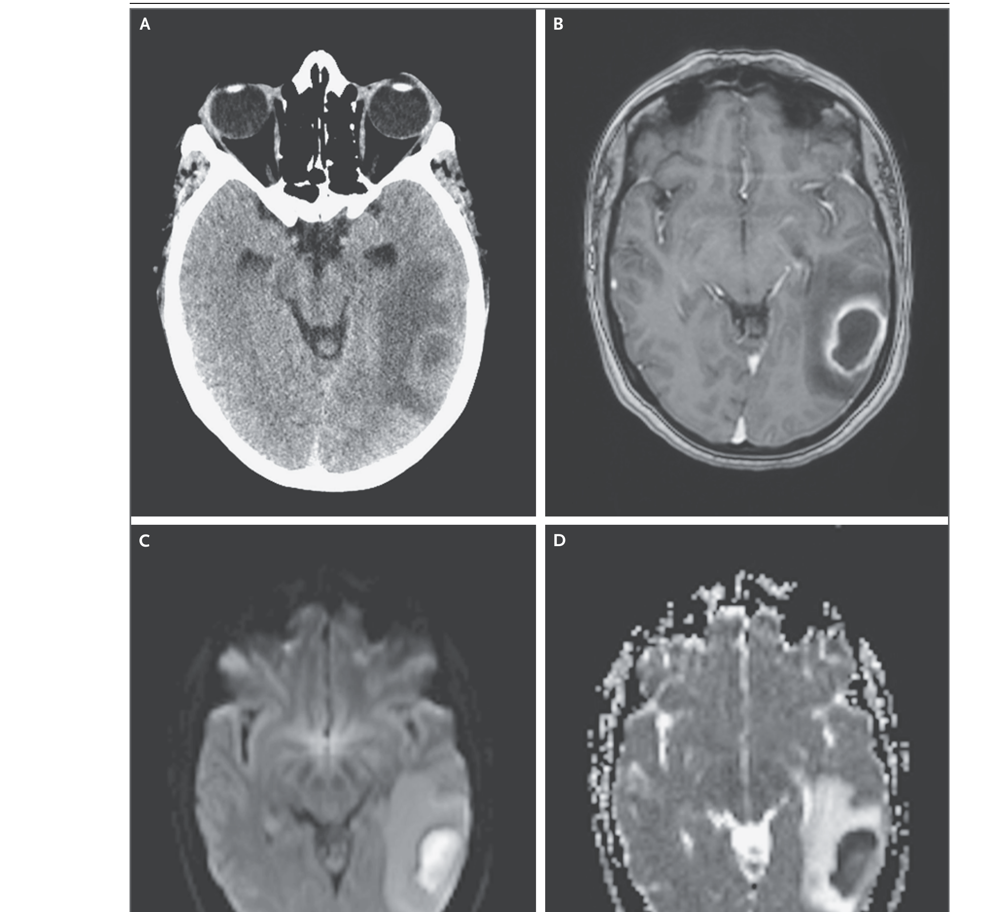
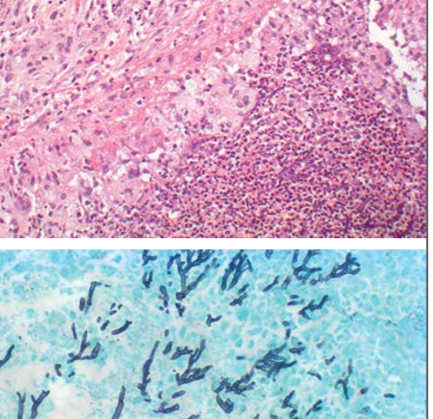

本ページで使用する略語一覧
| CT | Computed Tomography — コンピュータ断層撮影 |
| MRI | Magnetic Resonance Imaging — 磁気共鳴画像 |
| DWI | Diffusion-Weighted Imaging — 拡散強調画像 |
| ADC | Apparent Diffusion Coefficient — みかけの拡散係数 |
| CSF | Cerebrospinal Fluid — 脳脊髄液 |
| HIV | Human Immunodeficiency Virus — ヒト免疫不全ウイルス |
| CNS | Central Nervous System — 中枢神経系 |
| PCR | Polymerase Chain Reaction — ポリメラーゼ連鎖反応 |
| 16S rDNA | 16S ribosomal DNA — 16Sリボソーマル DNA（細菌同定に用いる遺伝子配列） |
| ¹H NMR | Proton Nuclear Magnetic Resonance（spectroscopy） — プロトン核磁気共鳴（スペクトロスコピー） |
| EVD | External Ventricular Drain — 外部脳室ドレーン |
| MSSA / MRSA | Methicillin-Sensitive / Resistant Staphylococcus aureus — メチシリン感性／耐性黄色ブドウ球菌 |
| TMP-SMX | Trimethoprim-Sulfamethoxazole — トリメトプリム-スルファメトキサゾール（ST合剤） |
| INH / RIF / PZA / EMB | Isoniazid / Rifampin / Pyrazinamide / Ethambutol — イソニアジド／リファンピシン／ピラジナミド／エタンブトール（抗結核薬） |
| PPV / NPV | Positive / Negative Predictive Value — 陽性／陰性的中率 |
| CI | Confidence Interval — 信頼区間 |
| RCT | Randomized Controlled Trial — ランダム化比較試験 |
| ICU | Intensive Care Unit — 集中治療室 |
このレビューのコアメッセージ
画像・検査・外科手技・抗菌薬の進歩にもかかわらず、脳膿瘍は依然として致死率の高い難しい病態である。原因は細菌・抗酸菌・真菌・寄生虫と多岐にわたり、報告される発生率は10万人あたり0.4〜0.9例、免疫抑制患者で増加する。本レビュー（NEJM 2014）は、感染経路と宿主要因から起因菌を推定し、画像（特にMRI拡散強調）で腫瘍と鑑別し、定位的吸引で診断・減圧しつつ経験的抗菌薬を開始するという、研修医・集中治療医が押さえるべき診療の骨格を示す。過去50年で死亡率は40%から15%へ低下し、現在は約70%が良好な転帰をたどる。
SECTION 1 誘因（predisposing factors）と疫学
脳膿瘍は「素因のある宿主」に起こる
多くの患者で脳膿瘍は素因（誘因）を背景に発生する。代表的な誘因は、①基礎疾患（例：HIV感染）、②免疫抑制薬による治療歴、③脳を守る自然のバリアの破綻（手術・外傷・乳様突起炎・副鼻腔炎・歯性感染など）、④全身性の感染源（心内膜炎・菌血症など）である。発生率は10万人あたり0.4〜0.9例だが、免疫抑制患者では増加する。
（/10万人）
感染経路
感染経路
残りの症例は機序が不明である。免疫抑制の程度・種類によって想定すべき病原体が大きく変わる点が、起因菌推定の出発点になる。
固形臓器移植・造血幹細胞移植後の免疫抑制療法やHIV感染による高度免疫抑制では、結核や真菌・寄生虫など非細菌性の原因が多くなる。HIV感染はToxoplasma gondii による脳膿瘍と関連するが、結核菌（M. tuberculosis）感染の素因にもなる。固形臓器移植患者ではノカルジアに加え、アスペルギルス・カンジダなどの真菌性膿瘍のリスクが高く、固形臓器移植患者の脳膿瘍では真菌が最大90%を占める。
SECTION 2 感染経路ごとの起因菌
経路で起因菌が決まる — 経験的治療の根拠
細菌は約半数で隣接病巣からの直達性（contiguous）波及、約1/3で血行性（hematogenous）播種により脳へ侵入する（残りは機序不明）。経路ごとに想定菌が異なり、これが経験的抗菌薬選択の土台になる。
| 感染経路・契機 | 主な起因菌 |
|---|---|
| 術後・頭部外傷 | 皮膚常在菌（S. aureus・S. epidermidis）、グラム陰性桿菌 |
| 傍髄膜病巣からの直達性波及 中耳・乳突蜂巣・副鼻腔 | 連鎖球菌が高頻度。ブドウ球菌性・多菌性（嫌気性菌・グラム陰性桿菌を含む）もある |
| 血行性播種 心疾患・肺疾患・遠隔感染巣 | ブドウ球菌・連鎖球菌が高頻度 |
| 副鼻腔・歯性感染由来 | しばしば多菌性（polymicrobial） |
血行性播種では基礎にある心疾患（心内膜炎・先天性心疾患）・肺疾患（動静脈瘻）や遠隔感染巣（皮膚・副鼻腔・歯）が背景になり、原疾患の症状を伴って受診することがある。
SECTION 3 膿瘍が形成される段階（cerebritis → 被膜形成）
早期脳炎から被膜化までの連続した過程
脳膿瘍の第一段階は早期脳炎（early cerebritis）である。これが壊死中心部を取り囲む血管周囲の炎症反応へ進み、周囲白質の浮腫が増す。続いて壊死中心部が最大サイズに達し、線維芽細胞の集積と血管新生によって被膜（capsule）が形成される。被膜は反応性コラーゲンが豊富になり厚くなるが、炎症と浮腫は被膜を越えて広がる。
早期脳炎：限局した脳実質の炎症として始まる。
血管周囲炎・壊死中心部：壊死中心を取り囲む炎症と、周囲白質の浮腫が増大。
被膜形成：壊死中心が最大化し、線維芽細胞集積・血管新生で被膜ができる。
被膜の肥厚：反応性コラーゲンで被膜が厚くなる。炎症・浮腫は被膜の外側まで及ぶ。

SUMMARY 第1章のキーメッセージ
SECTION 4 症状・徴候 — 古典的三徴は当てにならない
最も多いのは頭痛、発熱・意識障害はしばしば欠ける
脳膿瘍で最も頻度の高い症状は頭痛であり、発熱と意識レベルの低下はしばしば欠如する。神経学的徴候は膿瘍の部位に依存し、数日〜数週間にわたって軽微なこともある。前頭葉や右側頭葉の膿瘍では行動変化を呈しうる。脳幹・小脳の膿瘍では脳神経麻痺・歩行障害、あるいは水頭症による頭痛や意識変容を呈することがある。痙攣は最大25%の患者でみられる。
臨床症状
発症
膿瘍の部位次第
膿瘍が大きくなり周囲浮腫が増すほど症状・徴候は明瞭になるが、鎮静下や基礎にある神経疾患のために認識が難しいことがある。血行性播種の患者では原疾患（感染源）の症状を伴って受診することがある。
SECTION 5 鑑別診断
腫瘍・脳卒中・他の中枢神経感染症と区別する
鑑別診断には神経・感染症の幅広い疾患が含まれる。具体的には脳腫瘍・脳卒中・細菌性髄膜炎・硬膜外膿瘍・硬膜下膿瘍などである。HIV感染患者では原発性中枢神経系リンパ腫も鑑別に入る。
SUMMARY 第2章のキーメッセージ
SECTION 6 画像診断 — 全例で頭部画像、MRI拡散強調で腫瘍と鑑別
造影CTで迅速に、MRI＋DWI/ADCで確実に
脳膿瘍が疑われる全患者で頭部画像を行う。造影CTは膿瘍の大きさ・個数・局在を迅速に検出できる。MRI（拡散強調＝DWIとADCを併用）は、脳膿瘍を原発性・嚢胞性・壊死性の腫瘍と鑑別するうえで有用な検査である。115例・嚢胞性病変147個（うち脳膿瘍97例）を対象とした前向き研究では、DWIによる脳膿瘍と原発／転移性腫瘍の鑑別の感度・特異度はともに96%（陽性的中率98%・陰性的中率92%）であった。¹H NMRスペクトロスコピーの追加は、DWI単独に比べて感度・特異度をわずかに高めるにとどまった。
（腫瘍との鑑別）
（PPV）
（NPV）

SECTION 7 病理所見（真菌性膿瘍の例）
膿瘍の組織像では、グリオーシスを呈する脳組織内に好中球とマクロファージの集簇からなる膿瘍を認める。真菌が原因の場合、特殊染色で真菌体が描出される。

SECTION 8 微生物学的診断 — 培養・腰椎穿刺の可否・16S PCR
血液・髄液培養の陽性率は約1/4
血液と髄液の培養で起因菌が同定できるのは約4分の1の患者にとどまる。髄液培養は髄膜炎を合併する患者で有用なことがあるが、これらの患者では脳ヘルニアのリスクを必ず考慮する。
歯・副鼻腔・耳・皮膚の感染巣も培養する（外科的除去が必要なこともある）。膿瘍吸引液・髄液・血液の評価にはグラム染色と好気・嫌気培養を含める。免疫不全患者や結核・日和見感染のリスクがある患者では、抗酸菌・ノカルジア・真菌の塗抹・培養と、T. gondii のPCRを行う。
細菌性脳膿瘍が強く疑われるが培養が陰性の場合、PCRに基づく16SリボソーマルDNAシークエンスが確定的な病因診断をもたらし、標的治療を可能にすることがある。膿瘍吸引液71例（うち培養陽性30例＝42%）でこの検査を行った研究では、59例（83%）で細菌DNAが検出された。同定された細菌タクサは80種類で、うち44種はこれまで脳膿瘍で報告がなく、37種は培養されたことがなかった。膿瘍内の細菌多様性を示す一方、これらすべてが病態に関与し治療を要するかは不明である。
SUMMARY 第3章のキーメッセージ
SECTION 9 外科は「起因菌同定」と「減圧」のために行う
定位的吸引 — ≥1cmならほぼ全例で可能
脳神経外科は、起因菌の同定（他の方法で判明していない場合）と、選択された患者での膿瘍サイズの縮小（減圧）のために不可欠である。近代的な定位的（stereotactic）手技により、直径1cm以上の脳膿瘍は局在を問わずほぼ全例で定位的吸引が可能である。定位ナビゲーションや容積CT・MRIによる三次元再構成で、脳の「eloquent」領域（言語・運動・感覚・視覚など重要機能を担う領域）を避けた穿刺経路を計画する。
可能な目安
適応とされる径
診断目的に吸引
膿の中心部の定位的吸引は、疑われる菌種や患者の状態で禁忌でない限り、診断と減圧のために行うべきである。直径2.5cm超は外科介入の適応として推奨されてきたが、比較研究のデータはなく、絶対的な適応とはいえない。
サイズ・部位・全身状態で吸引を判断する
起因菌が既に同定されている場合、吸引の適応は膿瘍のサイズと部位・患者の全身状態・吸引で意味のある減圧が得られる見込みに依存する。小さな多発膿瘍では、診断目的に最大の膿瘍を吸引し、他の膿瘍を吸引するかはサイズ・周囲浮腫・症状・抗菌薬への反応で決める。膿瘍が脳偏位を起こし脳ヘルニアに至る場合は、サイズによらず外科介入の適応となりうる。膿瘍が脳室系に接しているがまだ穿破していない場合は、穿破と続発する脳室炎を防ぐためにドレナージを考慮する。
SECTION 10 術式の選択 — 吸引・切除・持続ドレナージの位置づけ
診断的吸引は膿瘍の最大限の排膿を目指す。膿瘍腔へのカテーテル留置による持続ドレナージは再手術率の低減を目的に提唱されているが、ルーチンには推奨されない。ドレナージカテーテルを介した膿瘍腔内への抗菌薬直接投与も、全身投与後の膿瘍腔内移行が限られることから一部の専門家が推奨するが、リスク・ベネフィットのデータが乏しくルーチンには推奨されない。全摘出（total resection）は20年前まで推奨されていたが、内科的・低侵襲外科の進歩により現在は限定的な役割である。
SUMMARY 第4章のキーメッセージ
SECTION 11 開始時期 — 疑った時点で開始、手術まで待つのは限定的
遅延は予後を悪化させる
抗菌薬開始の遅れは予後不良につながりうる。診断から治療開始までの中央値が2日であった後ろ向き研究があり、研究者らは脳膿瘍が臨床的に疑われた時点で抗菌薬を開始すべきと結論づけた。一方、定位的吸引の前に抗菌薬を投与すると培養の検出率が下がりうるため、疾患が重症でなく・全身状態が安定し・数時間以内に手術可能な場合に限り、手術後まで治療を延期するのは妥当である。ただし膿瘍は初期の重症度によらず急速に進行しうるため、この方針には注意を要する。
SECTION 12 誘因別の経験的治療（Table 1・2）
初期治療は「最も可能性の高い菌・移行性」で選ぶ
初期抗菌薬は、感染機序と患者の素因から推定される最も可能性の高い起因菌・感受性パターン・膿瘍への移行性に基づいて選択する。
| 状況 | 経験的レジメン |
|---|---|
| 標準 | セフォタキシムまたはセフトリアキソン ＋ メトロニダゾール。代替としてメロペネム（S. aureus の可能性があれば、菌同定・感受性判明までバンコマイシンを追加） |
| 移植患者 | セフォタキシム／セフトリアキソン ＋ メトロニダゾール ＋ ボリコナゾール ＋ ST合剤（TMP-SMX）またはスルファジアジン |
| HIV感染患者 | セフォタキシム／セフトリアキソン ＋ メトロニダゾール ＋ ピリメタミン ＋ スルファジアジン。結核をカバーするためINH・RIF・PZA・EMBの追加を考慮 |
| 術後・頭部外傷（頭蓋骨折） | バンコマイシン ＋ 第3／第4世代セフェム（セフェピム）＋ メトロニダゾール |
| 傍髄膜病巣からの直達性波及 脳外科手術歴なし | セフトリアキソンまたはセフォタキシム ＋ メトロニダゾール（ブドウ球菌を疑えばバンコマイシン追加）。セフェム／メトロニダゾール禁忌例はメロペネムを代替に考慮 |
| 血行性播種 | 第3世代セフェム ＋ メトロニダゾール（嫌気性菌カバー）＋ バンコマイシン（ブドウ球菌に対し、菌同定・感受性判明まで） |
誘因と起因菌の対応（Table 1）
どの素因にどの菌を想定するか — 経験的治療を組み立てる地図になる。
| 素因（predisposing condition） | よくみられる起因菌 |
|---|---|
| HIV感染 | Toxoplasma gondii、ノカルジア・マイコバクテリウム属、Listeria monocytogenes、Cryptococcus neoformans |
| 好中球減少 | 好気性グラム陰性桿菌、アスペルギルス属、ムコール（Mucorales）、カンジダ・スケドスポリウム属 |
| 移植 | アスペルギルス・カンジダ属、ムコール、スケドスポリウム属、腸内細菌科、ノカルジア属、T. gondii、M. tuberculosis |
| 穿通性外傷・脳外科手術 | S. aureus・S. epidermidis、連鎖球菌（嫌気性・好気性）、腸内細菌科、クロストリジウム属† |
| 中耳炎・乳様突起炎 | 連鎖球菌（嫌気性・好気性）、バクテロイデス・プレボテラ属、腸内細菌科† |
| 副鼻腔炎 | 連鎖球菌（嫌気性・好気性）、バクテロイデス属、腸内細菌科、S. aureus、ヘモフィルス属† |
| 肺膿瘍・膿胸・気管支拡張症 | フソバクテリウム・アクチノマイセス・バクテロイデス・プレボテラ・ノカルジア・連鎖球菌属 |
| 細菌性心内膜炎 | S. aureus、連鎖球菌属 |
| 先天性心疾患 | 連鎖球菌・ヘモフィルス属 |
| 歯性感染 | フソバクテリウム・プレボテラ・アクチノマイセス・バクテロイデス・連鎖球菌（嫌気性・好気性）の混合感染 |
† 腸内細菌科には大腸菌、エンテロバクター・クレブシエラ・プロテウス・サルモネラ属が含まれる。
SECTION 13 起因菌が判明した後の標的治療（Table 2）
起因菌別レジメン
起因菌が分離されたら、最も有効な治療へ変更する。具体的な薬剤の選択は感受性試験の結果に依存する。
| 起因菌 | 標的レジメン |
|---|---|
| Actinomyces 属 | ペニシリンG |
| Bacteroides fragilis | メトロニダゾール |
| 腸内細菌科 | セフォタキシムまたはセフトリアキソン |
| Fusobacterium 属 | メトロニダゾール |
| Haemophilus 属 | セフォタキシムまたはセフトリアキソン |
| Listeria monocytogenes | アンピシリンまたはペニシリンG§ |
| M. tuberculosis | INH＋RIF＋PZA＋EMB |
| Nocardia 属 | ST合剤（TMP-SMX）またはスルファジアジン |
| Prevotella melaninogenica | メトロニダゾール |
| Pseudomonas aeruginosa | セフタジジムまたはセフェピム§ |
| S. aureus（MSSA） | ナフシリンまたはオキサシリン |
| S. aureus（MRSA） | バンコマイシン |
| Streptococcus anginosus 群・他の連鎖球菌 | ペニシリンG |
| Aspergillus 属 | ボリコナゾール |
| Candida 属 | アムホテリシンB製剤¶ |
| Cryptococcus neoformans | アムホテリシンB製剤¶ |
| ムコール（Mucorales） | アムホテリシンB製剤 |
| Scedosporium apiospermum | ボリコナゾール |
| T. gondii | ピリメタミン ＋ スルファジアジン |
§ アミノグリコシドの併用も考慮する（例：ゲンタマイシン1.7mg/kg q8h）。¶ フルシトシン25mg/kg q6hの追加を考慮（血中トラフ50〜100µg/mL）。混合感染の一部として分離される菌では併用療法が必要なことがある。
主要薬剤の成人投与量（腎・肝機能正常時）
Table 2 脚注より。特記なき場合は静脈投与。
SECTION 14 治療期間とモニタリング
静注は伝統的に6〜8週間
細菌性脳膿瘍に対する静注抗菌薬の期間は伝統的に6〜8週間である。メトロニダゾールの長期投与は神経障害（ニューロパチー）と関連するが、ある研究では中止後に全例で末梢神経障害が改善した。英国抗菌化学療法学会の脳神経外科感染ワーキングパーティは静注1〜2週間のみとし、その後は臨床反応に応じて経口へ変更しうると勧告した。これは一部の選択患者で成功しているが標準治療とはみなされていない（経口レジメン例：メトロニダゾール＋シプロフロキサシン＋アモキシシリン）。
（伝統的）
頭部画像
定期的に画像
治療評価の重要な指標は患者の神経学的状態と頭部画像での膿瘍サイズである。画像は、臨床的悪化があれば直ちに、改善がなければ1〜2週後に、その後は回復が明らかになるまで最長3か月間は隔週で行う。抗菌薬使用下でも膿瘍が増大し臨床的に悪化する場合は、追加の脳神経外科手術の適応となる。
SUMMARY 第5章のキーメッセージ
SECTION 15 合併症 — 脳室穿破・水頭症・痙攣
意識低下では直ちに画像 — 水頭症・脳ヘルニアを除外
意識レベルが低下した患者では、水頭症や切迫する脳ヘルニアを検出するため直ちに脳画像を行う。膿瘍の脳室系への穿破は脳室炎を引き起こし、しばしば水頭症に至り、27〜85%という高い死亡率と関連する。穿破例では外部脳室カテーテル（EVD）が、髄液のドレナージ・採取・頭蓋内圧モニタリング、必要時の脳室内抗菌薬投与の経路となる。水頭症は後頭蓋窩の膿瘍でも多い。意識低下は痙攣やてんかん重積でも起こりうる。
死亡率
多い部位
ICP管理・脳室内投与
SECTION 16 補助療法 — ステロイドの位置づけ
膿瘍の増大や周囲浮腫に応じて局所神経脱落症状が生じうる。補助的グルココルチコイドは脳浮腫を軽減しうるため約半数の患者で使用されるが、RCTのデータがなく、また抗菌薬の中枢神経移行を低下させうる。したがってその使用は、脳ヘルニアに至りそうな高度の浮腫を有する患者に限定すべきである。高圧酸素療法は補助療法として小規模の症例集積で報告があるのみで、ルーチンとはみなせない。
SECTION 17 予後 — 過去50年で大きく改善
死亡率は40%（1960年）から15%（直近10年）へ
脳膿瘍の転帰は過去50年で改善している。頭部画像技術の進歩、抗菌薬レジメンの使用、低侵襲脳神経外科手技の導入による。死亡率は1960年の40%から直近10年の15%へ低下し、現在は約70%の患者が良好な転帰（神経学的後遺症がない、あるいは最小）をたどる。ただし脳膿瘍後の機能・神経心理学的評価のデータは不足している。
（1960年→直近10年）
（後遺症なし／最小）
低侵襲外科の進歩
SUMMARY 第6章のキーメッセージ
出典：Brouwer MC, Tunkel AR, McKhann GM II, van de Beek D. Brain Abscess. N Engl J Med 2014;371:447-456（2014年7月31日）
DOI：https://doi.org/10.1056/NEJMra1301635
本資料は教育目的で作成したサマリーです。診断・治療方針の決定には必ず原典を参照してください。
制作：ICU 関谷